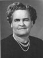

Henry William and Annie Isadore Roundy Davis Family
Home
Histories
Charts
Photos
Maps
Restricted
News
Info
Contact
 symbol is a link to a history, and the chart symbol is a link to a history, and the chart  symbol is a link to a family group chart.) symbol is a link to a family group chart.)
|


| Henry Adelbert Davies 29 Nov. 1886 - 21 Nov. 1966 Married Eliza Lenora Jakeman 25 May 1905 Married Charlotte Wylie Stacey 3 Sep. 1932 The 1st child of Henry William Davis and Annie Isadore Roundy |
|
 | John Lorenzo Davis 20 Mar. 1889 - 30 Dec. 1971 Married Florence Cowley 24 Nov. 1909 The 2nd child of Henry William Davis and Annie Isadore Roundy |
| Jennie Priscilla Davis 18 Mar. 1891 - 4 June 1975 Married Ray Carlton Cowley 28 June 1911 The 3rd child of Henry William Davis and Annie Isadore Roundy |
|
| Clarence Murdell Davis 8 June 1893 - 10 Jan. 1969 Married Zilpha Jackson 24 July 1897 The 4th child of Henry William Davis and Annie Isadore Roundy | |
 | Florene Davis 28 Apr. 1896 - 11 Mar. 1980 Married Archie Earl Buchanan 7 Feb. 1917
The 5th child of Henry William Davis and Annie Isadore Roundy |
| Clorene Davis 28 Apr. 1896 - 4 Feb. 1978 Married Louis William Gardner 21 Apr. 1920 The 6th child of Henry William Davis and Annie Isadore Roundy | |
| Wilmer Parrish Davis 20 Oct. 1899 - 17 July 1989 Married Naomi Anderson 15 Dec. 1920 The 7th child of Henry William Davis and Annie Isadore Roundy | |
| Stanley Heber Davis 17 Nov. 1902 - 4 Dec. 1984 Married Elva Clay Cowley 24 Nov. 1926 The 8th child of Henry William Davis and Annie Isadore Roundy | |
| * | Laverda May Davis 9 May 1906 - 26 Jan. 1907 The 9th child of Henry William Davis and Annie Isadore Roundy |
| Faye Belle Davis 17 July 1910 - 9 May 1997 Married Floyd William Ence 18 July 1932 The 10th child of Henry William Davis and Annie Isadore Roundy |
Back to Buchanan Family History web pages.